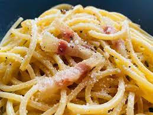

Carbonara

Description
Heavenly. The best thing you'll ever eat
Ingredients
- 12 oz. of Spaghetti nodles
- 1 cup and 1 teaspoon Pecorino Romano cheese
- 4 egg yolks
- 7 oz. Guanciale
- Ground Black Pepper
Steps
- Cook the pasta in the boiling water
- cut the guanciale in small pieces
- cook guanciale in pan until crispy. save the pan with the rendered fat
- mix the egg yolks and pecorino roman cheese. Add freshly ground black pepper
- Put the cooked pasta in the guancaile pan on the stove. save some pasta water. Make sure the pan is on simmer
- add the mixed cheese and egg sauce to the pan. mix the sauce in with the pasta fast so the sauce does not overcook
- serve on a plate. you're welcome
source